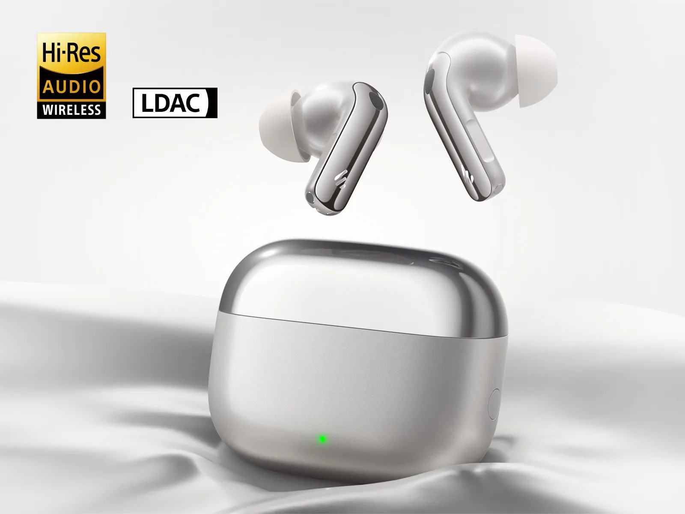

5만 원대에 LDAC·듀얼 드라이버·최대 -48dB ANC — 에디파이어 EvoBuds·EvoBuds Pro, 통역은 덤으로 오는 이어폰
5~6만 원대에 고음질 코덱 LDAC, 듀얼 드라이버, 최대 -48dB ANC가 들어간 무선 이어폰입니다. 통역은 덤이고, 실전에서는 이어폰을 일반 블루투스로만 연결해 삼성·구글 통역 앱과 함께 쓰는 쪽이 더 정확합니다. 8,800원 차이로 갈리는 선택과 직구 주의점까지 정리했습니다.
목차 · 11개 장
- 1. 5~6만 원대인데, 스펙표가 상급기입니다
- 2. 한눈에 비교: EvoBuds vs EvoBuds Pro
- 3. 에디파이어 EvoBuds — 반이어형, 편안함이 무기
- 4. 에디파이어 EvoBuds Pro — 8,800원 더 내면 얻는 것
- 5. 통역 기능, 솔직하게 — 여기까지가 '덤'입니다
- 6. 실전 팁: 중국 앱 로그인 없이, 폰의 통역 앱으로 더 잘 씁니다
- 7. 그래서 어느 쪽을 사야 할까
- 8. 사기 전 꼭 확인할 5가지
- 9. 구매 링크 모아 보기
- 10. 마무리
- 참고 자료 (가격·스펙 2026년 11월 26일 확인 / 통역 앱 안내 2026년 11월 28일 확인)
이 포스팅은 알리익스프레스 어필리에이트 활동의 일환으로, 일정액의 수수료를 제공받을 수 있습니다.
요즘 알리익스프레스의 5~6만 원대 무선 이어폰 스펙표를 보면 예전 같지 않습니다. LDAC 고음질 코덱, 듀얼 드라이버, 최대 -48dB 하이브리드 ANC, 멀티포인트까지 들어간 제품이 커피 몇 잔 값 차이로 국내 보급기와 맞붙습니다.
그중에서도 값과 검증이 모두 잡힌 모델이 에디파이어(EDIFIER) EvoBuds와 상위형 EvoBuds Pro입니다. 두 제품은 원래 'AI 통역 이어폰'으로 알려졌지만, 통역은 이 제품을 사는 이유의 중심이 아닙니다. 통역은 앱에서만 되고, 완성도도 아직 낮습니다. 대신 이어폰 본업 성능이 이 가격대에서 이례적으로 좋습니다.
그래서 이 글은 순서를 바꿔 정리했습니다.
- 이어폰으로서 값어치가 있는가 — 스펙과 실사용 후기
- 통역 기능은 실제로 어느 정도인가 — 솔직한 한계
- 통역이 필요할 때 어떻게 쓰는 게 가장 좋은가 — 중국 앱 로그인 대신, 삼성·구글 통역 앱과 연결하는 실전 팁
가격·후기·배송 조건은 2026년 11월 26일 알리익스프레스 한국 사이트에서 직접 확인한 값입니다.
1. 5~6만 원대인데, 스펙표가 상급기입니다
1-1. 이 가격대에서 LDAC은 흔치 않습니다
LDAC은 소니가 만든 고음질 블루투스 코덱으로, 일반 SBC보다 약 3배 많은 데이터를 보냅니다. 같은 음원이라도 저음의 밀도와 고음의 결이 다르게 들립니다. 문제는 이 코덱이 라이선스·칩셋 조건 때문에 10만 원 이하 제품에는 거의 들어가지 않는다는 점입니다.
EvoBuds와 EvoBuds Pro는 둘 다 LDAC(Hi-Res Audio Wireless) 를 지원합니다. 안드로이드 폰이라면 설정에서 한 번 켜 두면 되고, 아이폰은 AAC로 동작합니다.
1-2. 드라이버와 ANC: 숫자보다 구조를 보세요
| 항목 | EvoBuds | EvoBuds Pro |
|---|---|---|
| 드라이버 | 13mm 트리컴포지트 | 6mm + 10mm 듀얼 동축 다이내믹 |
| ANC | 적응형(반이어형 한계) | 하이브리드, 최대 48dB |
- EvoBuds의 13mm 대구경 드라이버는 저음의 양감이 좋습니다. 후기에서 "저음이 강화되어 소리가 풍성하다"는 평이 반복되는 이유입니다.
- EvoBuds Pro의 듀얼 드라이버는 저역과 중고역을 나눠 맡깁니다. 6만 원대에서 이 구성은 드물고, 실제로 "가격대 대비 음질 만족"이라는 평가가 많습니다.
- 최대 48dB ANC는 에디파이어 일본 보도자료 기준 수치입니다. 다만 수치가 곧 체감은 아닙니다. 커널형인 Pro는 지하철·비행기 소음을 확실히 눌러 주지만, 20만 원대 국내 플래그십과 비교하면 한 체급 아래입니다.
1-3. 정리하면 "통역 이어폰"이 아니라 "통역이 덤으로 붙은 가성비 이어폰"입니다
이 제품의 정체를 한 줄로 줄이면 이렇습니다.
"5~6만 원대에 LDAC·듀얼 드라이버·ANC·멀티포인트를 갖춘 이어폰인데, 앱을 깔면 통역 기능이 하나 더 붙는다."
그래서 구매 판단도 이 순서로 하시는 게 맞습니다. 이어폰이 필요해서 사는 것이고, 통역은 있으면 쓰는 덤입니다. 통역만 목적이라면 이 이어폰을 사지 않아도 됩니다(6장에서 설명합니다).

2. 한눈에 비교: EvoBuds vs EvoBuds Pro
| 구분 | 에디파이어 EvoBuds | 에디파이어 EvoBuds Pro |
|---|---|---|
| 알리 판매가(2026-11-26) | ₩51,900 (표시 정가 ₩53,058~54,191) | ₩60,700 (표시 정가 ₩62,083) |
| 달러 환산(참고) | 약 US$37.56 (알리 표시 환산) | 약 US$44 (같은 환산 기준 추정) |
| 평점·리뷰 | 4.7 / 103건 | 4.7 / 119건 |
| 누적 판매 | 500+ | 350 |
| 착용 방식 | 세미인어(이어팁 없는 반이어) | 커널형(이어팁 삽입) |
| 노이즈 캔슬링 | 적응형 ANC | 하이브리드 ANC(에디파이어 보도자료 기준 최대 48dB) |
| 드라이버 | 13mm 트리컴포지트 | 듀얼 동축 다이내믹(6mm+10mm) |
| 고음질 코덱 | LDAC (Hi-Res Audio Wireless) | LDAC (Hi-Res Audio Wireless) |
| 블루투스 | 6.1 (80ms 저지연) | 6.0 |
| 배터리 | 단독 7시간 / 케이스 포함 최대 35시간 | 케이스 포함 최대 36시간 |
| 방수 | IP54 (케이스 제외) | IP54 (케이스 제외) |
| AI 통역(덤) | 21개 언어 | 21개 언어 |
| 멀티포인트 | 2대 동시 연결 | 2대 동시 연결 |
| 무게 | 판매페이지 미표기 | 50g |
| 배송 | 무료 · 12/02~07 도착 예정 | 무료 · 12/02~07 도착 예정 |
| 재고 | 10~12개 | 17개 |
두 제품의 차액은 8,800원입니다. 커피 두 잔 값 차이로 착용 방식과 ANC 등급이 갈리니, 이 차이를 이해하고 고르시는 게 좋습니다. 배터리는 Pro가 "최대 36시간"이지만, 일본 리뷰의 실측 표기로는 ANC를 켜면 단독 7시간·케이스 포함 28시간으로 줄어듭니다. ANC를 늘 켜 두는 분이라면 이 숫자로 보셔야 합니다.
3. 에디파이어 EvoBuds — 반이어형, 편안함이 무기
3-1. 생김새와 착용감
EvoBuds는 귀에 쏙 들어가는 이어팁이 없는 세미인어(반이어)형입니다. 에어팟 3세대와 같은 방식으로, 귀를 막지 않아 오래 껴도 답답함이 덜합니다. 실제 구매 후기에서도 "착용감이 좋다"는 평가가 반복해서 나옵니다(착용감 관련 키워드 6건). 반대로 귀가 작은 분은 흘러내릴 수 있어, 운동용으로는 Pro 쪽이 안정적입니다.
색상은 블랙과 스타라이트 두 가지입니다.

3-2. 음질과 기본 성능
- 13mm 트리컴포지트 드라이버: 저음이 단단하고 힘이 있습니다. 후기에서 "저음이 강화되어 소리가 풍성하다"는 평이 많습니다.
- LDAC 지원: 일반 블루투스보다 3배 많은 데이터를 전송하는 고음질 코덱입니다. 안드로이드 폰의 개발자 옵션에서 LDAC를 켜야 제대로 쓸 수 있습니다.
- 블루투스 6.1 / 80ms 저지연: 영상 볼 때 입 모양과 소리가 거의 어긋나지 않습니다.
- 배터리 7시간(단독) + 35시간(케이스): 하루 출근길 사용에는 충분합니다.
- IP54: 땀과 물 튀김 정도는 견딥니다. 단, 충전 케이스는 방수 대상이 아닙니다.
- 멀티포인트: 폰과 노트북을 동시에 연결해 두고 번갈아 쓸 수 있습니다.
3-3. 실구매 후기가 말하는 장점과 단점
장점 (긍정 키워드 순위)
- 음질이 좋다 (22건)
- 가격 대비 만족 (8건)
- 품질이 기대 이상 (7건)
- 착용감이 편하다 (6건)
- 성능이 좋다 (5건)
단점 (후기에서 직접 확인된 것)
- ANC가 약하다: '노이즈 캔슬링이 효과 없다'는 평가가 5건 있습니다. 반이어형 구조상 한계이므로, ANC가 목적이라면 기본형은 답이 아닙니다. Pro로 가셔야 합니다.
- 터치가 너무 민감하다: 이어폰을 만지다 보면 원치 않는 조작이 될 수 있습니다. 앱에서 터치 동작을 바꿀 수 있습니다.
- 사람 많은 곳에서 끊김이 있다: 무선 기기가 밀집한 장소에서 연결이 불안정하다는 후기가 있습니다.
- 고음이 아쉽다: 저음은 좋지만 여성 보컬의 고음이 다소 흩어진다는 평이 있습니다.
에디파이어 EvoBuds — ₩51,900 알리에서 보기 →제휴 링크 · 구매 가격은 동일합니다
4. 에디파이어 EvoBuds Pro — 8,800원 더 내면 얻는 것
4-1. 커널형 + 하이브리드 ANC + 듀얼 드라이버
Pro는 이어팁을 귀에 삽입하는 커널형입니다. 에디파이어 보도자료 기준 최대 48dB 하이브리드 ANC를 내세우고, 마이크도 3개(양쪽 합 6개)를 씁니다. 실제 후기 키워드에서도 'ANC가 좋다'가 9건으로, 기본형에 'ANC가 약하다'는 평가가 5건 있던 것과 대비됩니다.
ANC 강도는 앱에서 외부 소리 듣기 / 중 / 강으로 나눠 고를 수 있습니다. 여기에 공간음향(해외 리뷰 기준), 6mm+10mm 듀얼 동축 다이내믹 드라이버, 최대 36시간 재생, 착용 감지가 더해집니다. 통역 기능은 기본형과 같은 21개 언어입니다.

4-2. 솔직한 단점 — 여기가 중요합니다
- 조작이 불편하다: 터치가 아니라 압력식(꾹 누르기)이라 "어색하다"는 평가가 8건으로, 단점 키워드 중 가장 많습니다.
- 불량·AS 후기가 있다: 한 구매자는 충전·페어링 불량인데 판매자 응답이 없고 반품도 어려웠다고 추가 후기를 남겼습니다. 알리 직구의 공통 위험입니다.
- LDAC 설정이 어렵다: 초기 설정이 번거롭다는 평이 있습니다. 앱의 HD 오디오 설정에서 LDAC를 켜고 다시 페어링해야 하는 경우가 있습니다.
- ANC 기대치는 낮추세요: 'ANC가 좋다'는 평과 '이 정도가 ANC인가' 싶다는 평이 함께 있습니다. 20만 원대 국내 제품과 비교하면 부족합니다.
- 케이스에서 꺼내기 불편하다: 표면이 미끄러워 잡기 어렵고, 넣을 때 각도를 살짝 틀어야 한다는 평이 있습니다.
에디파이어 EvoBuds Pro — ₩60,700 알리에서 보기 →제휴 링크 · 구매 가격은 동일합니다
5. 통역 기능, 솔직하게 — 여기까지가 '덤'입니다
5-1. 작동 방식
통역은 에디파이어 전용 앱 EDIFIER ConneX에서만 작동합니다.
- 앱에서 이어폰을 연결하고, 오른쪽 위 번역(Translate) 메뉴를 엽니다.
- 내 언어와 상대 언어를 고릅니다(최초 1회 언어팩 다운로드).
- 화면 모드를 고릅니다. 사이드바이사이드(채팅처럼 위아래로 주고받기) 또는 페이스투페이스(마주 보고 화면을 사이에 두는 방식).
- 번역음을 스마트폰 스피커로 들을지 이어폰으로 들을지 선택합니다.
- 말을 하면 자동으로 인식해 화면에 번역문이 뜨고, 번역 음성이 재생됩니다.
5-2. 실제 완성도는 '보조용'입니다
해외 리뷰와 국내 리뷰를 함께 보면 한계가 꽤 일관되게 나옵니다.
- 계정 로그인이 필수입니다. 앱을 설치하고 회원가입·로그인을 해야 통역 메뉴가 열립니다. 급할 때 이 과정이 가장 성가십니다.
- 동시통역이 아니라 순차 통역입니다. 내가 말하고 끊으면 번역이 나오고, 상대가 말하고 끊으면 또 번역이 나오는 번갈아 말하기 방식입니다. 문장마다 시차가 있어 대화가 끊깁니다.
- 기계번역 투입니다. 뜻은 통하지만 문장이 매끄럽지 않습니다. 전용 통역기(타임케틀 등)와 비교한 리뷰에서도 "기계번역감이 더 강하다"는 평가가 나옵니다.
- 번역이 중간에 끊기는 경우가 있습니다. 문장이 잘리거나 멈춰서 앱을 다시 켜야 한다는 사용기도 있습니다.
- 음악·영상 소리는 번역하지 않습니다. 대화·통화 전용입니다.
- 지원 국가 제한 문구가 있습니다. 에디파이어 공식 페이지에 "일부 국가/지역에서만 사용 가능"이라는 유보가 붙어 있습니다. 앱에서 한국어가 목록에 보이는지 먼저 확인하세요.
5-3. 유일하게 확실한 장점: 오프라인 언어팩
미리 언어팩을 내려받으면 인터넷 없이(비행기 모드에서도) 통역이 된다는 점은 여러 리뷰에서 확인됩니다. 데이터가 터지지 않는 기내·해외에서 쓸 수 있다는 것은 분명한 강점입니다. 다만 이 장점 하나 때문에 이 이어폰을 고를 이유는 약합니다. 같은 오프라인 통역을 삼성 갤럭시 AI '통역'도 언어팩으로 해 주기 때문입니다.
정리: 통역 기능은 "앱을 깔았으니 한번 써 보는 덤"입니다. 이 기능의 완성도를 기준으로 5~6만 원을 판단하시면 실망합니다.
6. 실전 팁: 중국 앱 로그인 없이, 폰의 통역 앱으로 더 잘 씁니다
여기가 이 글의 핵심입니다. 이어폰은 그냥 블루투스 이어폰으로만 연결하고, 통역은 폰에 이미 있는 앱으로 하는 편이 더 정확하고 자연스럽습니다.
6-1. 왜 이쪽이 나은가
| 비교 | EDIFIER ConneX 통역 | 삼성 갤럭시 AI '통역'·구글 번역·파파고 |
|---|---|---|
| 준비 | 앱 설치 + 계정 가입·로그인 + 언어팩 | 앱 설치(삼성은 기본 탑재) |
| 방식 | 번갈아 말하기(순차) | 앱에 따라 자동 언어 감지·연속 인식 |
| 한국어 품질 | 기계번역 투 | 문맥·고유명사 처리에서 앞섬 |
| 메뉴판·간판 | 불가 | 카메라 번역 가능 |
| 업데이트 | 제품 펌웨어 주기 | 앱이 수시로 개선 |
핵심은 "이어폰이 하는 일"과 "앱이 하는 일"을 분리하는 것입니다. 이어폰은 소리를 귀에 넣어 주는 역할만 하면 되고, 번역은 이미 잘하는 앱에 맡기면 됩니다.
6-2. 준비: 이어폰은 '일반 블루투스 이어폰'처럼 연결
- 폰의 블루투스 설정에서 EvoBuds를 페어링합니다. EDIFIER ConneX 설치나 로그인 없이도 일반 이어폰으로 정상 동작합니다.
- 앱은 ANC 강도·EQ·펌웨어를 바꿀 때만 열면 됩니다.
- 통역 중에는 ANC를 끄고 '주변 소리 듣기(앰비언트)'로 두세요. 귀를 막으면 상대 목소리가 마이크에 덜 들어가 인식률이 떨어집니다. Pro는 앱에서 외부 소리 듣기로 전환할 수 있습니다.
- 볼륨은 미디어 볼륨으로 조절됩니다. 통역 음성이 안 들리면 미디어 볼륨부터 확인하세요.
6-3. 삼성 갤럭시 AI '통역'
- 쓰는 법: 빠른 설정창을 내려 '통역' 을 누릅니다(버튼이 안 보이면 '펼치기'). 없으면 설정 → Galaxy AI에서 확인합니다.
- 기종: 원 UI 6.1 이후 갤럭시 S24·S23 시리즈, Z 플립5·폴드5, 탭 S9 등에서 지원됩니다. 기종·소프트웨어 버전에 따라 지원 범위가 다르니 빠른 설정창에서 직접 확인하세요.
- 이어폰으로 듣기: 블루투스 이어폰을 연결한 상태에서 '근처 기기(블루투스 오디오 기기 연결)' 권한을 허용하면 통역 음성이 이어폰으로 나옵니다. 화면을 안 봐도 귓속으로 한국어가 들어옵니다.
- 오프라인: 언어팩을 내려받으면 셀룰러·와이파이 없이도 작동합니다(언어·기종별 차이 있음). 출국 전 비행기 모드로 한 번 테스트해 두세요.
- 주의: 삼성 계정 로그인이 필요합니다. 다만 이미 쓰고 있는 계정이라 새로 가입할 일은 없습니다.
6-4. 구글 번역 — '대화' 모드 + 출력 분리
- 번역 앱 아래의 '대화'(최신 버전은 '실시간 번역')를 누르고, 왼쪽에 상대 언어·오른쪽에 한국어를 고릅니다.
- 여기서 출력 방향을 나누는 것이 핵심입니다. 설정에서 상대 언어 → 헤드폰(이어폰), 내 언어 → 휴대폰 스피커로 두면, 나는 귓속으로 한국어를 듣고 상대는 폰 스피커로 자기 언어를 듣습니다.
- 인터넷이 필요합니다. 구글의 최신 '실시간 번역'은 지역·기기 제한이 있어 안 보일 수 있고, 그때는 '대화' 모드로 쓰면 됩니다.
- 메뉴판·간판은 카메라 번역으로 같은 앱에서 해결됩니다.
6-5. 파파고
- 대화 모드에서 마이크를 누르고 말하면 자동으로 언어를 인식합니다. 한국어 문장이 자연스러운 편이라 짧은 응대에 편합니다.
- 인터넷이 필요하고, 화면을 돌려 상대에게 보여 주는 방식도 됩니다.
6-6. 통역 품질을 올리는 6가지
- ANC를 끄고 주변 소리 모드로 — 상대 목소리가 마이크에 들어가야 합니다.
- 상대가 말할 때는 폰을 상대 쪽으로 가까이 둡니다. 폰 마이크가 상대 말을 받는 구조가 가장 정확합니다.
- 이어폰 마이크가 잡히면 인식이 떨어질 수 있습니다. 폰 설정에서 통역 앱의 마이크 입력이 폰 마이크인지 확인하세요.
- 한 번에 한 문장씩, 또렷하게. 길게 이어 말하면 중간에 잘립니다.
- 숫자·약 이름·주소는 화면의 원문을 함께 확인하세요. AI 번역은 결과가 매번 달라질 수 있습니다.
- 배터리를 아끼세요. 통역 앱 + 블루투스 + 화면 켜짐은 전력을 많이 씁니다. 보조배터리를 챙기시는 편이 좋습니다.
7. 그래서 어느 쪽을 사야 할까
7-1. EvoBuds(₩51,900)가 맞는 사람
- 이어폰을 하루 종일 껴도 답답하지 않았으면 한다
- LDAC·멀티포인트를 5만 원대로 얻고 싶다
- ANC는 크게 필요 없다(반이어형이라 어차피 약합니다)
- 통역은 있으면 쓰는 정도다
7-2. EvoBuds Pro(₩60,700)가 맞는 사람
- 지하철·비행기에서 소음을 실제로 줄이고 싶다
- 귀에 꼭 맞는 커널형을 선호하고, 음악 비중이 높다
- 8,800원 차이는 충분히 값어치가 있다고 본다
7-3. 이 이어폰이 필요 없는 사람
- 통역이 목적인 분: 폰의 삼성·구글·파파고 앱만으로 충분합니다. 40만 원대 전용 통역기와 비교하면 이 제품의 통역은 보조 수준입니다.
- 국내 정식 A/S가 필수인 분: 아래 8장을 먼저 보세요.
8. 사기 전 꼭 확인할 5가지
⚠️ 가장 먼저 확인하실 것 — 알리 직구는 국내 정식 A/S가 사실상 불가능합니다. 이 제품은 국내 정식 수입·판매 제품이 아니라 해외 판매자 직배송입니다. 고장이 나도 삼성·에디파이어 국내 서비스센터에서 받을 수 없고, 판매자와 알리 분쟁 절차로만 해결해야 합니다. 무료 반품도 미개봉·기간 조건이 붙습니다. "5만 원 아끼고 A/S를 포기한다"는 거래라고 생각하시면 판단이 쉬워집니다.
8-1. KC 인증·정품·AS
이 글을 쓰며 확인한 판매 페이지의 규격 항목에는 KC(전파적합성) 인증 정보가 표시되어 있지 않았습니다(같은 스토어의 다른 리스팅에는 'Unavailable(판매자 미제공)'로 표시된 경우도 있었습니다). 블루투스 기기이므로 국내 전파법상 인증 여부가 문제될 수 있습니다.
- 국내 A/S 불가: 국내 서비스센터 수리 대상이 아닙니다. 초기 불량이면 도착 직후(개봉 전후 며칠 안에) 알리 분쟁을 열어야 합니다.
- 개봉 영상을 남겨 두시면 분쟁에서 유리합니다.
- 정품 확인은 에디파이어 공식 스토어인지로 판단하세요. 이 글의 링크는 공식 스토어 상품으로 연결되는 것을 직접 확인했습니다.
8-2. 한국어 지원 여부
판매 페이지에는 '21개 언어'라고만 적혀 있고 목록은 나오지 않습니다. 에디파이어 공식 표기는 21개 언어, 국내 리뷰에서는 한국어 포함 약 20개국으로 확인됩니다. 앱 버전에 따라 목록이 다를 수 있으니, 구매 후 앱에서 언어 목록을 먼저 확인하세요. (6장의 방법을 쓰시면 이 확인 자체가 필요 없습니다.)
8-3. 배송·관세
배송 조건 (판매페이지 표기)
- 무료배송, 도착 예정 12월 2일~7일
- 지연 시 ₩1,300 쿠폰, 분실·파손 환불, 30일 미도착 환불, 무료 반품이 표기되어 있습니다
관세·부가세
5만~6만 원대 단품은 관세 부담이 크지 않지만, 여러 개를 한 주문에 담으면 과세될 수 있습니다. 선물용으로 두 개 이상 사실 때는 주문을 나누는 편이 안전합니다.
8-4. 가격·재고 변동
확인 시점 재고는 EvoBuds 10~12개, Pro 17개뿐이었고, 가격도 조회할 때마다 ₩51,900 ↔ ₩53,058 처럼 조금씩 달라졌습니다. 블랙프라이데이 시즌이라 할인 폭이 자주 바뀝니다. 결제 화면의 최종 금액을 기준으로 판단하세요.
8-5. 앱 로그인 없이 쓸 수 있는 범위
EDIFIER ConneX를 쓰지 않아도 블루투스 이어폰으로는 정상 동작합니다. 다만 ANC 강도·EQ·펌웨어 업데이트는 앱이 필요합니다. 앱 로그인을 피하고 싶으시면, 앱은 설정용으로만 최소한 쓰고 통역은 폰 앱으로 하시면 됩니다.
9. 구매 링크 모아 보기
| 제품 | 알리 판매가 | 링크 |
|---|---|---|
| 에디파이어 EvoBuds (세미인어) | ₩51,900 | https://s.click.aliexpress.com/e/_c40QUMGh |
| 에디파이어 EvoBuds Pro (커널형·ANC) | ₩60,700 | https://s.click.aliexpress.com/e/_c4CudRA1 |
두 링크 모두 에디파이어 공식 스토어의 해당 상품으로 연결되는 것을 직접 확인했습니다.
10. 마무리
EvoBuds와 EvoBuds Pro는 "5~6만 원대에 LDAC·듀얼 드라이버·ANC를 넣은 이어폰" 으로 볼 때 값어치가 분명합니다. 특히 Pro는 8,800원 차이로 커널형·48dB ANC·듀얼 드라이버를 얻는 구성이라, 이어폰이 필요한 분이라면 만족도가 높습니다.
통역은 반대로 보셔야 합니다. 앱 로그인·순차 통역·기계번역 투라서, 이 기능을 기대하고 사시면 아쉽습니다. 대신 이어폰을 일반 블루투스 이어폰으로만 연결하고 삼성 갤럭시 AI '통역'·구글 번역·파파고를 쓰시면, 로그인 부담 없이 더 정확한 한국어 통역을 귓속으로 들을 수 있습니다.
마지막으로 국내 정식 A/S가 안 된다는 점은 가격의 이면입니다. 이 조건을 받아들일 수 있을 때만, 결제 화면의 최종 금액을 확인하고 주문하세요.
이 포스팅은 알리익스프레스 어필리에이트 활동의 일환으로, 일정액의 수수료를 제공받을 수 있습니다.
참고 자료 (가격·스펙 2026년 11월 26일 확인 / 통역 앱 안내 2026년 11월 28일 확인)
- 가격·평점·판매수·배송·재고: ko.aliexpress.com 상품페이지 2건, 2026-11-26 18:2x 조회
- 통역 기능·스펙: 판매페이지 설명 + edifier.com/global 공식 페이지
- 실사용 평가: 국내 리뷰(piscomu.com, 한국어 포함 약 20개국·페이스투페이스 모드), 일본 리뷰(monopedia.jp, 21개 언어·오프라인 언어팩·로그인 필수), goodgoodlife.jp(전용 통역기와 번역 품질 비교·번역 중단 사례), rezv.net(앱 통역 시 자동 외부 소리 모드), bisonicr.ldblog.jp(LDAC 설정 절차)
- 48dB ANC: 에디파이어 일본 보도자료(PR TIMES, 2025-11-05)
- 배터리(ANC 켜짐 7시간/28시간): goodgoodlife.jp 실측 표기
- 삼성 갤럭시 AI '통역': 삼성전자서비스 갤럭시 AI 안내(삼성 계정 로그인·언어팩·기종별 지원 차이), 원 UI 6.1 지원 기종 보도(연합뉴스 2024-03-29)
- 구글 번역 대화·실시간 번역과 출력 분리: Google 번역 고객센터(실시간 번역 모드·헤드폰 출력)
- 국내가 비교: 알리 내 '[Official Korean Release] Edifier Evobuds Pro' 리스팅 ₩89,000, 가격비교 사이트(직구각) 2026-11-24 집계 EvoBuds ₩96,240 / Pro ₩96,840~106,620
※ 본문의 가격·평점·재고·도착 예정일은 2026년 11월 26일 확인 시점의 값이며, 판매처·쿠폰·재고에 따라 달라집니다. 블랙프라이데이 할인 종료 후에는 금액이 달라질 수 있습니다.
이어서 읽기
 쿠팡 · AI 스마트 가전
쿠팡 · AI 스마트 가전